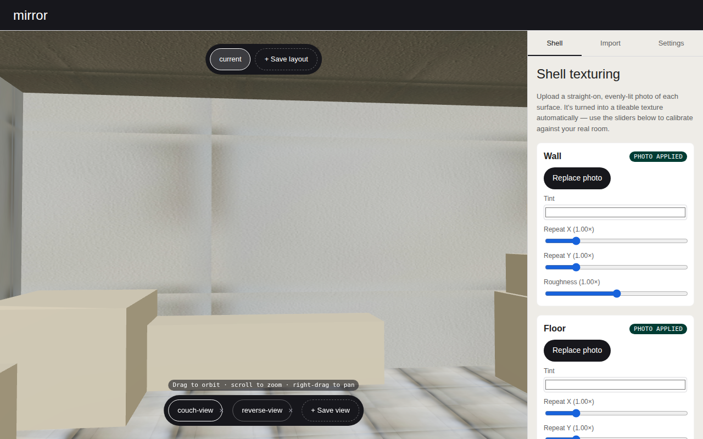
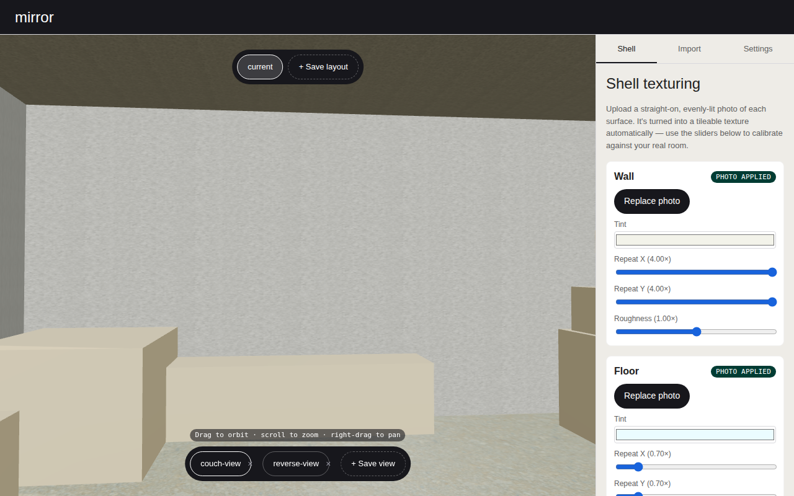
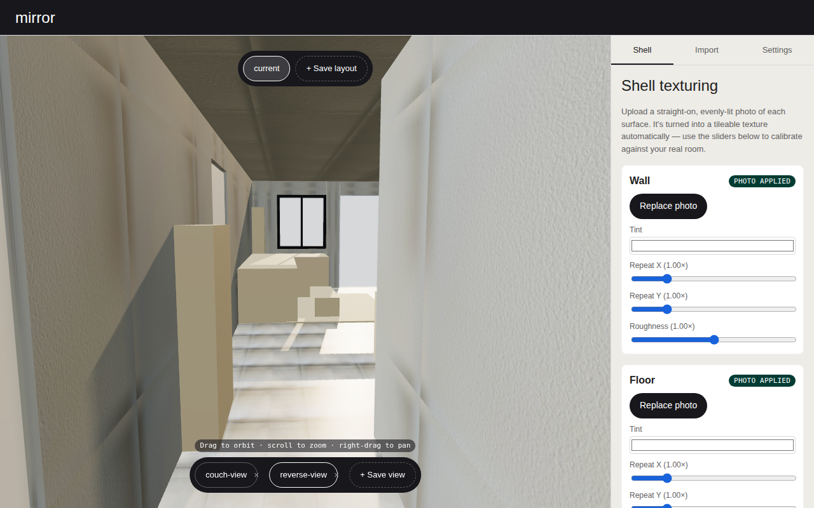
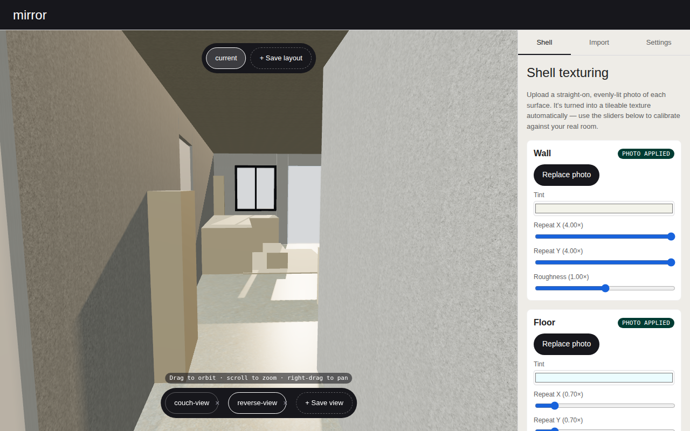
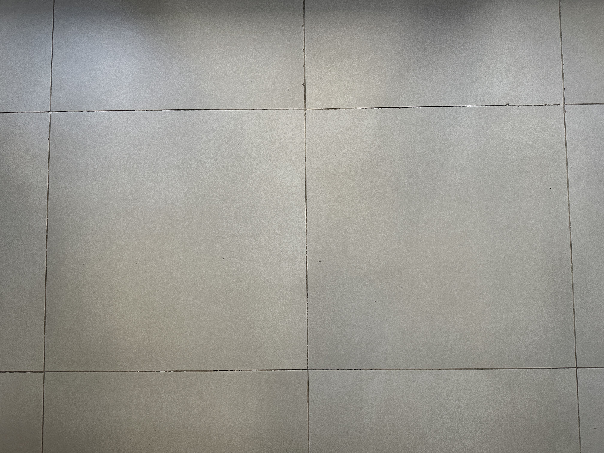
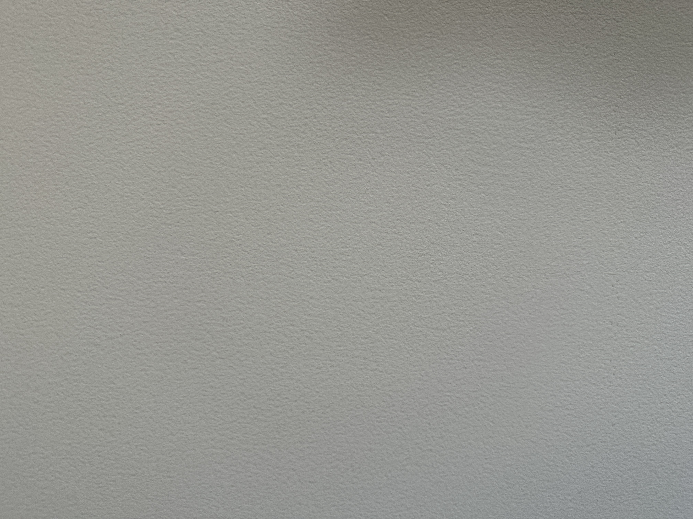
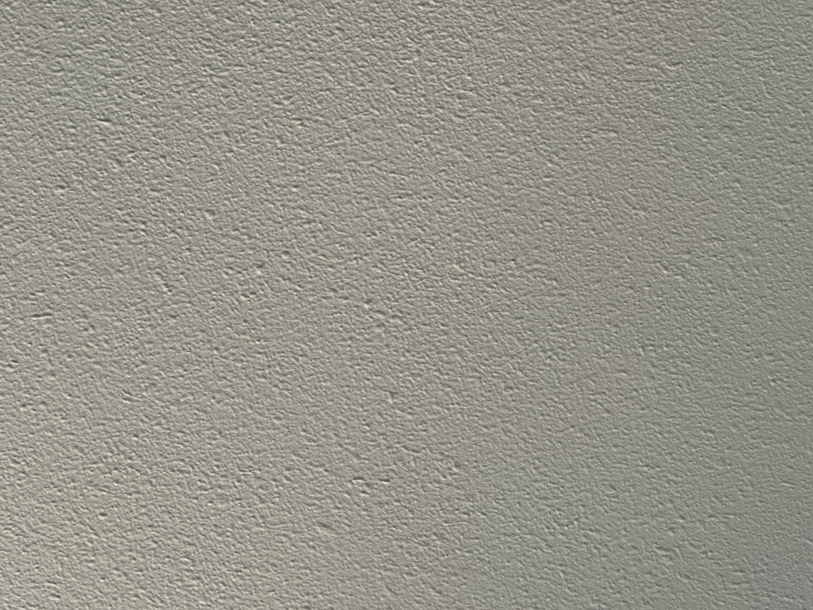

Before = Shyam's own real surface photos (spike/inputs/surfaces/*.JPG) through the
unmodified pipeline at default calibration — the most honest, reproducible stand-in for the
acceptance-run's complained-about state (his actual tuned calibration only ever lived in his own
browser's IndexedDB/OPFS, never in this repo).
After = the lever-1 source textures (src/scene/defaultShellTextures.ts —
GitHub-raw substitutes for the PRD's named Poly Haven/ambientCG, see
src/assets/shell-source-textures/README.md), calibrated.
Bar (PRD-v2 §7.5): floor/wall/ceiling no longer read as obvious tiles. Judged by Shyam, not this
script — that's what these renders are for.






